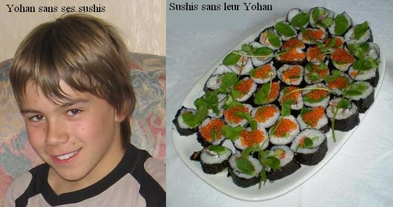

Recette n°186 : sushis de Marcq en Baroeul, les
authentiques sushis comme les fait Yohan

On raconte qu'au XVIème siècle de hardis navigateurs
nippons arrivèrent en mer du Nord, qu'ils remontèrent le
cours de l'Escaut, de la Deûle puis de la Marque ; ils
débarquèrent dans un petit village de pêcheurs
appelé Marcq-en-Baroeul, et se précipitèrent
à l'auberge car ils mourraient de faim. On leur servit un
délicieux plat fait de hareng fumé roulé dans de
l'oryza sativa (une graminée locale) et des algues ; le
capitaine du navire, qui s'appelait Sensé-Io-Huan épousa
la patronne de l'auberge et la ramena au Japon avec la recette des
sushis de Marcq-en-Baroeul.
Ingrédients :
- 300 g de riz japonais ou de riz à rizotto
- 5 feuilles de nori (algue noire pour sushis)
- 1 avocat bien mûr coupé en bâtonnets
- 1 tiers de concombre coupé coupé en bâtonnets
- 1 carotte coupée en bâtonnets
- deux filets de harengs fumés
- une tranche de saumon fumé coupée en lanières
- des oeufs de truite saumonée ou de saumon pêché
dans la Marque
- deux cuillers à soupe de vinaigre de riz
- une cuiller à café de sucre
- une pincée de gros sel
- quelques branches de persil
- un peu de sauce soja
- les ustensiles nécessaires à la fabrication des sushis
(tapis de bambou, couteau très aiguisé ou cutter, film
alimentaire transparent)
- du temps et de la patience (si on vise la perfection, s'y prendra la
veille)
Préparation :
1 - porter à ébullition la cuiller à café
de sucre dissoute dans les deux cuillers à soupe de vinaigre de
riz, réserver
2 - rincer abondamment les 300 g de riz jusqu'à ce que l'eau de
rinçage soit claire
3 - mettre le riz dans un demi-litre d'eau salée dans
une casserole, remuer et porter à ébullition
4 - quand ça bout, réduire le feu, couvrir et laisser
mijoter 15 mn en remuant de temps en temps pour ne pas que cela colle
au fond
5 - arrêter le feu, remuer, et laisser couvert 10 mn en remuant
de temps en temps : l'eau doit être totalement absorbée
par le riz
6 - découvrir, verser le vinaigre de riz sucré et remuer
pour bien mélanger, mettre dans un saladier, laisser refroidir
un peu (pour éviter de se brûler les mains)
7 - préparer tous les ingrédients à portée
de main (légumes et poissons découpés) ainsi qu'un
bol d'eau froide pour s'y tremper les mains de temps en temps
8 - sur un tapis de bambou (les tiges étant parallèles au
bord de la table), étaler une feuille de nori, "sunny side up"
(face brillante dessus)
9 - mouiller légèrement la feuille de nori à la
main sans trop perdre de temps car elle commence à
rétrécir...
10 - se mouiller les mains (on le refera souvent car le riz colle) et
étaler une mince couche de riz (1/2 cm) sur la feuille de nori
jusqu'à 1 cm du bord
11 - composer le coeur du sushis avec poissons et légumes sous
forme d'une bande de 3 à 4 cm de large, vers
l'extrémité du tapis proche du bord de table
12 - rouler avec l'aide du tapis comme on roule une cigarette : on doit
obtenir un gros boudin noir de 5 à 6 cm de diamètre
13 - enlever délicatement le tapis de bambous et rouler
immédiatement le sushi dans un film plastique
14 - laisser reposer au frigo plusieurs heures (toute une nuit, c'est
encore mieux)
15 - juste avant le repas, sortir du film plastique et découper
en rondelles de 3 à 5 cm d'épaisseur avec un couteau
très aiguisé ou un cutter bien propre.
16 - servir sur un plat avec les oeufs de poisson
17 - servir avec la sauce de soja à disposition dans des
coupelles
Observations :
1 - Recette exécutée à Marcq-en-Baroeul le 23 mars
2008 pour servir de repas du soir et de tapas le lendemain au repas
d’anniversaire d’Isabelle. La sœur de William et ses enfants ont
beaucoup apprécié ce plat qu’ils découvraient..
2 – Lors de la préparation, il faut penser à se munir de
serviettes ou de papier pour s'essuyer les mains car ça colle
vraiment beaucoup